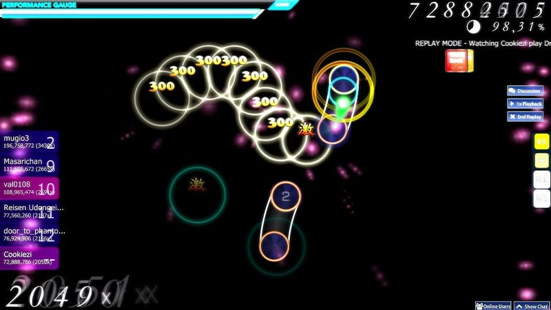
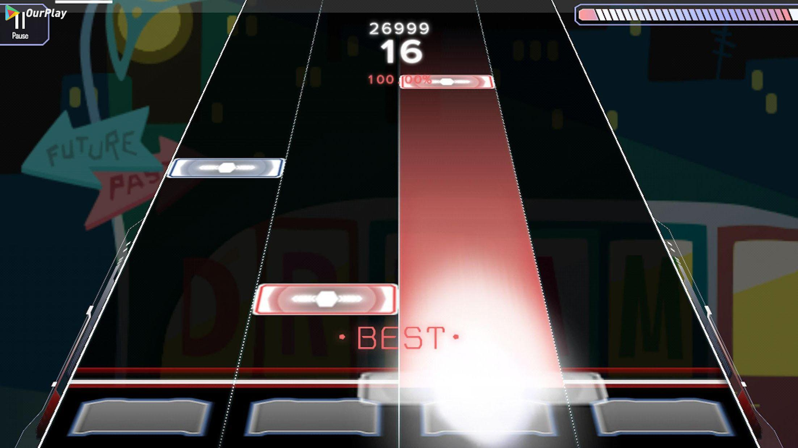

PC端音游
PC端一般上为敲击键盘、移动鼠标点击游玩，少数游戏可以连接其他的电子输入设备。电脑端音游常见的有Lunatic Rave
2（LR2），OSU，还有一些同时具有移动端与PC端的音游如Malody，Muse
Dash，同步音律喵赛克等。LR2是一款十分优秀的BMS模拟器，所谓BMS是一种于1998年推出的音乐游戏谱面格式。OSU，Malody为PC端中知名的社群类PC端音乐游戏。
以下是几个知名的PC端音游介绍。

osu! 由澳大利亚人 peppy 独立制作运行，完全免费，无道具收费。
osu! 有四种游戏模式。osu!,osu!taiko,osu!catch,osu!mania.
osu!模式中，需要击打的物件会按照顺序依次出现，玩家需要在合适的时间对该对象进行正确的操作。其中，圆圈点击即可；滑条需要在点击后按住鼠标键直到滑条结束；而转盘则需要玩家以尽量快的速度按住鼠标转动。
osu!taiko的玩法与《太鼓之达人》相似.
osu!catch,该模式玩法较为简单，玩家需要移动一个小人使其尽可能地接到所有水果。
osu!mania,为典型的下落式，为 1K（Key，键位数）至 20K，但其中 4K 和 7K 居多。

Malody是由woc2006领导的Mugzone团队开发的多平台音乐游戏. 目前有六种可游玩模式，分别为Key、Catch、Pad、Taiko、Ring与Slide。
Key模式：传统有轨下落式，支持轨道数为4~9的有轨道下落式谱面，仅包含单点（Tap）与长按（Hold），当某一列的一个音符到达判定线时玩家须按下该列所对应的键。包含了许多分化模式
主流模式：类比osu!mania、O2Jam等传统下落式的玩法，绝大多数4~7K上架谱面都属于此类。
Live(SIF)：配合LoveLive!等类似皮肤游玩的9K下落式，玩法与LLSIF手游基本相同（但目前无划键，已确认Malody5.0会追加划键），绝大多数9K上架谱面都属于此类。
IIDX：配合IIDX系列皮肤游玩的8K下落式，前身为DJ模式，具有七个普通note轨道与一个皿轨道，绝大多数8K上架谱面都属于此类。
pop'n：配合pop'n皮肤游玩的9K下落式。
Dance Cube：配合舞立方皮肤游玩的舞立方模式，使用6K作为模板。
Step：类比Stepmania玩法，且根据具体皮肤可在不同轨道数下支持PIU/DDR等玩法。
Catch模式：类比osu!ctb玩法，玩家需要操控一个盘子使其尽可能地接到所有note。仅包含普通note与奖励note（Rain）。
Pad模式：玩法同jubeat，玩家需要在4*4的格子里在指定时间与对应位置点击出现的note。包含单点（Tap）与长按（Hold）。
Taiko模式：玩法与太鼓之达人基本相似，音符会从右边飞来，当音符和左边的圆圈重合时玩家需要点击对应的位置/按键。包含咚/咔/大咚/大咔/连打/气球等note类型。
Ring模式：原创玩法，移动端限定，由左右对称的共6个判定点以及两个出note点组成，当音符与判定圆圈重合时玩家需要点击对应的按键。
Slide模式：无轨下落式，包含单点（Tap）、滑键（Wipe）与滑条（Slide），玩家需要使用点/滑等方式在对应位置完成各种类型的note。